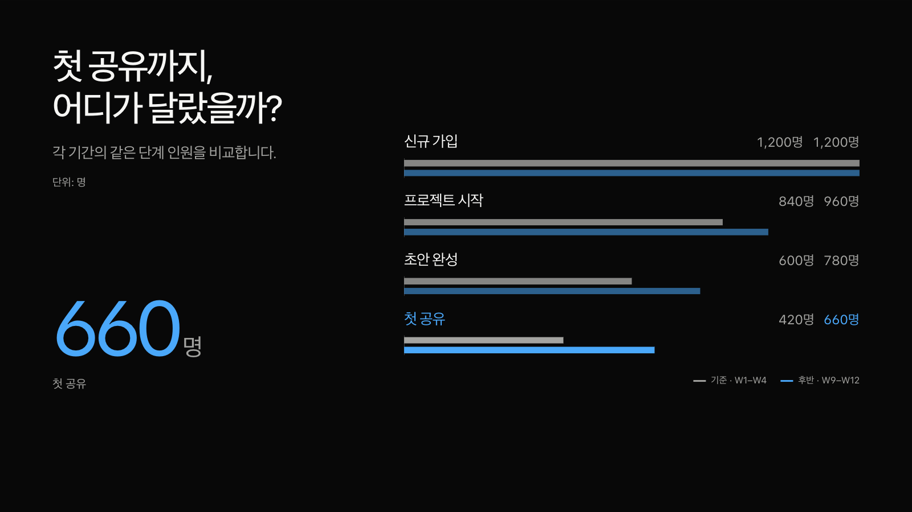

도표도,
하나의 무대 위에.
메시지, 큰 숫자, 그래프가 같은 배경에서 이어집니다. 필요한 데이터만 입력하면 도형과 강조값, 펼쳐 읽는 표까지 함께 바뀝니다.
슬라이더를 움직이거나 방향키로 비교하세요.


이전 · 기준 커밋 ab96f16개선 후 · 실제 웹 발표
메시지에 맞는 구도
넓게 펼친 추세, 좌우로 나눈 단계 비교, 점 옆에 직접 붙인 이름. 장면마다 데이터에 맞는 위계와 리듬을 만듭니다.
한 장에 필요한 값만
추세·막대·구성비·퍼널·흐름·산점도·일정·히트맵을 작은 설정으로 만듭니다. 7개 시점이나 5개 분류도 배열만 바꿔 사용합니다.
화면에서 수정하고 보관
내용 편집에서 도표 데이터를 바꾸고 결과를 확인하세요. 내용 내보내기로 바뀐 발표를 저장해 다른 컴퓨터에서도 이어 쓸 수 있습니다.